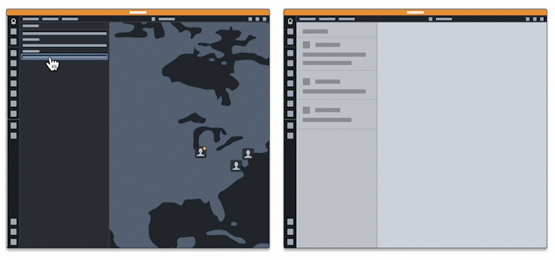
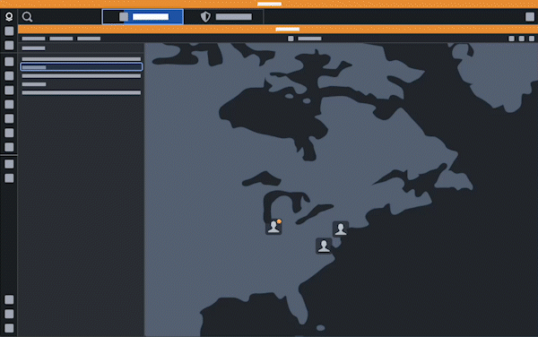
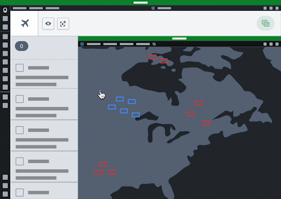

Cross-application interactivity is the ability to share data across distinct applications on the Palantir platform. Data in the platform can be shared through specific interaction points, such as through drag-and-drop actions, or by pairing applications so they share state in real time. Applications that implement cross-application interactivity create an ecosystem in which users can seamlessly build workflows that span multiple applications across and between Gotham and Foundry. This ecosystem enables users to connect applications in novel ways, since each interaction point in an application creates a potential connection to every other application with an interaction point.
As an example, drag-and-drop functionality can enable users to drag data from Gaia into a Workshop application, while ensuring data compatibility through data enrichment. Additionally, users can configure Workshop's App Pairing widget to connect supported Palantir platform applications (such as Gotham's Gaia and Graph) to their Workshop modules, allowing commands to automatically target the paired platform application on execution.

Cross-application interactivity also acts as a plug-in point for third-party developers to extend existing functionality by sharing context between applications. As workflows change and business logic evolves, cross-application interactivity unlocks new and diverse ways to generate value with the Palantir platform.
Currently, all Gotham applications and many Foundry applications implement some form of cross-application interactivity. Applications built in Workshop and Slate, or with the assistance of OSDK, can also implement cross-application interactivity.
When coupled with drag-and-drop functionality, App Pairing and Commands enable users to perform the following:
The sections below outline common interactions supported by the functionality of cross-application interactivity.
When a user completes a task, often the next step is to transition their workflow to another application to continue its execution. Use commands within the Button Group or App Pairing widgets to pass data between applications.
Users can drag and drop data, such an object or object set, between applications when their workflow revolves around entity identification and triage.

Configure the App Pairing widget or set commands to sync selection state when completing tasks that use multiple applications simultaneously. This enables users to view the same data using two complementary views and transition between the applications without losing state.

Additionally, users can embed one application within another to leverage existing views they integrate using the App Pairing widget.
:::callout{theme="neutral"} Users should embed only the applications they need into an existing application, as embedding multiple may impact performance. :::
The App Pairing and Commands widgets can read application state from the current viewport or selection and provide that context to AIP Logic.

Additionally, users can configure chatbots in AIP Chatbot Studio that leverage commands as tools to read from and write to any application that can interoperate with commands, such as Gaia.

Users can create drag-and-drop integration points to harness the power of their ontology and connect their application to others with similar integrations now and in the future.